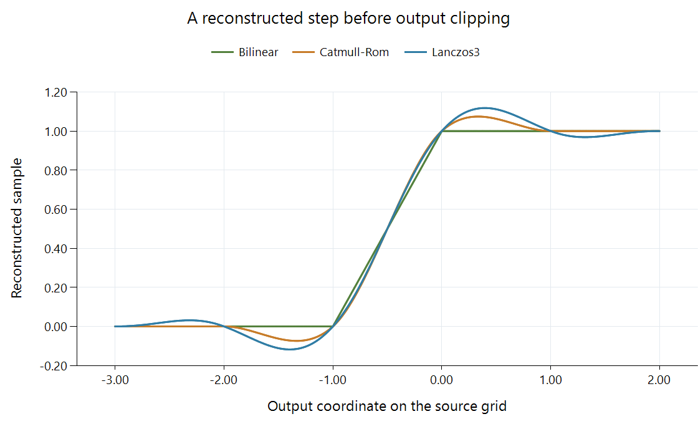

Scaling Ringing

Integer source positions below zero contain 0; positions zero and above contain 1. The curves use normalized weights with no anti-ringing or output clipping. Catmull-Rom uses B = 0, C = 0.5; Lanczos has radius three.
A reconstructed edge can have a dark dip before its transition and a bright overshoot after it. In a picture, that response can appear as narrow dark and light outlines. Scaling ringing is the filter's oscillating response around the transition.
The source need not contain those outlines. Its samples in this example contain only zero and one. The signed reconstruction weights create the intermediate overshoot.
Negative contributions create a value below black
At x = −1.5, Catmull-Rom combines source indices −3, −2, −1, and 0 with weights −0.0625, 0.5625, 0.5625, −0.0625. The first three source values are zero, while index 0 is one:
output = 0 + 0 + 0 − 0.0625 × 1 = −0.0625.
At x = 0.5, three contributing positions are on the white side and one on the black side. Their combination gives 1.0625, above the neighboring maximum of one.
Those values follow directly from a useful general distinction. Positive weights summing to one produce a mixture within the source neighborhood's range. Signed weights summing to one preserve a flat field, but a transition can make the positive and negative contributions cancel differently. The result can lie outside that range.
The bicubic coefficient example develops these weights; the Lanczos function shows another signed-lobe construction. Their plots describe the cause of their different edge responses.
Clipping and anti-ringing change the response
Clipping the example to [0, 1] makes both the negative dip and the excess above one hit an endpoint. It changes the displayed response but does not change the kernel that produced it. In another signal interval, overshoot can remain inside the available output codes and still appear as a visible outline around the local transition.
Anti-ringing processing can constrain a reconstruction relative to neighboring values or mix it with a more limited result. Its neighborhood, strength, and implementation establish what is constrained. Restricting the range can also alter thin bright features or the shape of an edge.
The relevant comparison is therefore the final response of kernel plus its constraints. The raw function alone explains a potential overshoot; the complete reconstruction determines how much survives.
Which stage produced the outline?
An Emby session can show an outline already present in the encoded source, introduced during a server resize, or introduced when the app fits the delivered frame to its display area. Compression artifacts and sharpening can produce related edge patterns through other operations.
| Comparison | What it isolates |
|---|---|
| Decoded source versus decoded converted output | Changes introduced before output encoding or by that encoding |
| Same decoded output at different presentation sizes | Changes introduced by the presentation path |
| Flat edge versus fine repeating texture | Edge overshoot versus an aliasing pattern |
A narrow outline tied to an edge is useful evidence about edge response. A broad wave pattern in repeating detail instead suggests examining spatial aliasing.